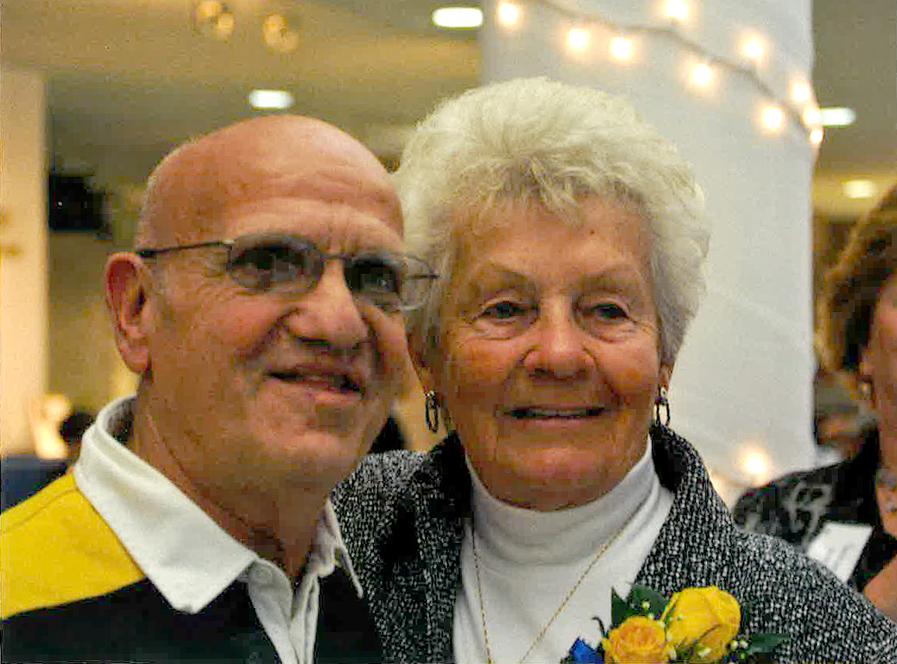
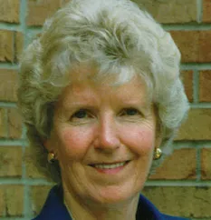

Trailblazers of the Mount
The success of women’s athletics at Mount St. Joseph University was built by trailblazers who created opportunities during a time when women’s sports were often overlooked. Through leadership, persistence, and vision, these individuals helped establish a strong foundation that continues to influence the program today.

Pat Shibinski
Pat Shibinski was one of the most influential figures in the early development of women’s athletics at MSJ. Beginning in the 1950s, she helped establish some of the first organized athletic programs, including field hockey, at a time when opportunities for women in sports were extremely limited.
In addition to coaching, Shibinski led the physical education department, playing a major role in shaping the structure and growth of women’s athletics at the Mount. Her leadership helped create an environment where female athletes could compete and succeed despite limited resources.
Shibinski is considered a true trailblazer because she built opportunities for women’s athletics before laws like Title IX required schools to support them. Her work laid the foundation for future expansion and success.
Jean Dowell
Jean Dowell was a key leader in the continued growth of women’s athletics at MSJ. As both a coach and athletic director, she played an important role in expanding programs and increasing opportunities for female athletes.
Dowell was especially influential during the transition to a coeducational institution. As men’s sports were introduced in the late 1980s and early 1990s, she worked to ensure that women’s athletics remained a priority and received equal support.
In 1993, Dowell filed a lawsuit claiming that women’s sports were being deprioritized. Although the case was settled out of court, it highlighted her commitment to fairness and equality in athletics. Her impact is still recognized today, including a campus building named in her honor.

Kay Corcoran
Kay Corcoran was one of the early contributors to the success and reputation of women’s athletics at MSJ. As a coach and leader, she helped build competitive teams at a time when women’s sports were still developing.
Corcoran played a role in attracting talented athletes and establishing a culture of dedication and excellence. Her work helped set a standard for performance and competitiveness that would continue to grow in later years.
Alongside other early leaders, Corcoran helped demonstrate that women’s athletics could thrive at a high level, even with limited resources and recognition.